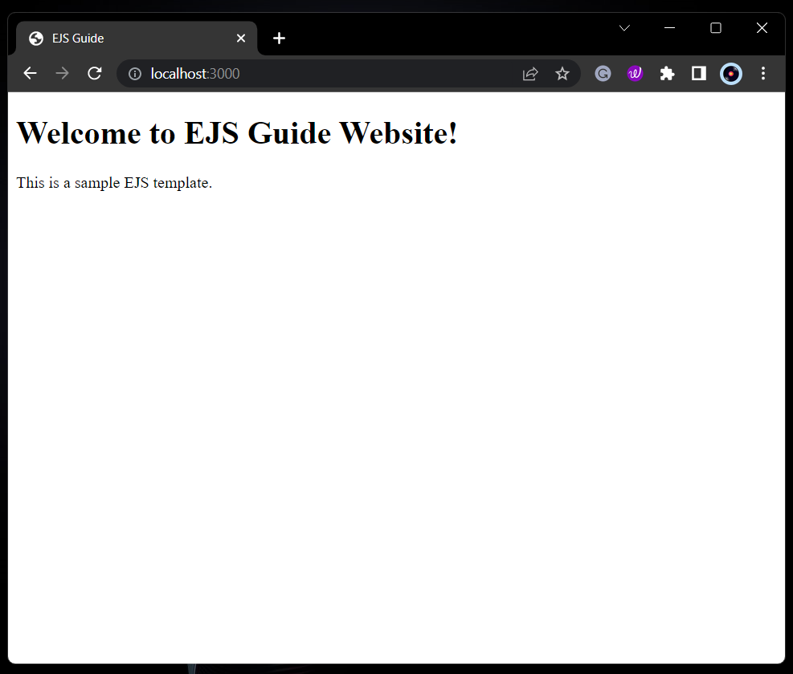

Creating a basic EJS templates
Recap
If you're building a web application with Node.js and Express, EJS (Embedded JavaScript) is a powerful templating engine that you can use to generate HTML markup dynamically.
What is CLI?
CLI is a command line program that accepts text input to execute operating system functions. CLI stands for "Command Line Interface".
| Species | Description |
|---|---|
-o / --output-file FILE |
Write the rendered output to FILE rather than stdout. |
-f / --data-file FILE |
Must be JSON-formatted. Use parsed input from FILE as data for rendering. |
-i / --data-input STRING |
Must be JSON-formatted and URI-encoded. Use parsed input from STRING as data for rendering. |
-m / --delimiter CHARACTER |
Use CHARACTER with angle brackets for open/close (defaults to %). |
-p / --open-delimiter CHARACTER |
Use CHARACTER instead of left angle bracket to open. |
-c / --close-delimiter CHARACTER |
Use CHARACTER instead of right angle bracket to close. |
-s / --strict |
When set to true, generated function is in strict mode. |
-n / --no-with |
Use 'locals' object for vars rather than using with (implies --strict). |
-l / --locals-name |
Name to use for the object storing local variables when not using with. |
-w / --rm-whitespace |
Remove all safe-to-remove whitespace, including leading and trailing whitespace. |
-d / --debug |
Outputs generated function body. |
-h / --help |
Display this help message. |
-V/v / --version |
Display the EJS version. |
Create a basic EJS template
- Create a a new folder called "views".
- Inside of your "views" folder, create a new file in your project directory called index.ejs.
This file will contain your EJS template. Here's an example of a simple EJS template:
<!DOCTYPE html>
<html>
<head>
<title><%= title %></title>
</head>
<body>
<h1><%= heading %></h1>
<p><%= message %></p>
</body>
</html>
In this template, there will be three EJS expressions:
- <%= title %> will display the value of the title variable.
- <%= heading %> will display the value of the heading variable.
- <%= message %> will display the value of the message variable.
Success
You have created a basic EJS template. You can now use this template to generate HTML markup with plain JavaScript.
Create Data to Pass to the Template
One of the main benefits of using a templating language like EJS is the ability to pass data to the template.
In order to display dynamic content on the web page, we need to pass data to the EJS template. To do this, create a new file in your project folder called data.js. This file will contain the data that we want to display on our web page.
Create an object with the data that you want to dynamically display in your HTML file. For example, let's create an object with a title, heading, and message.
const data = {
title: "EJS Guide",
heading: "Welcome to EJS Guide Website!",
message: "This is a sample EJS template.",
};
module.exports = data;
Set up your Express app
Create a new file in your project folder called app.js. This file will contain the code to set up your Express.js app.
const express = require("express");
const app = express();
const data = require("./data");
app.set("view engine", "ejs");
app.get("/", (req, res) => {
res.render("index", data);
});
app.listen(3000, () => {
console.log("Server started on port 3000");
});
In this code, we:
- Require the express module and create a new instance of an express app.
- Require the data from our data.js file.
- Set the view engine to EJS.
- Create a new route that renders our index.ejs file and passes in the data from data.js.
- Start the server on port 3000 and log a message to the console.
Start the server
In the terminal, run the following command to start the server:
Success
Now, visit "http://localhost:3000"
Outcome
